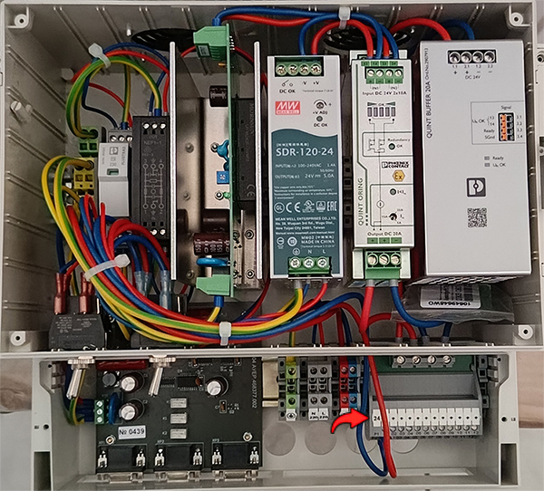

6. Не включается питание МИП на «Основном» или «Резервном» комплекте
При включении не загорается зелёный светодиод на МИП05.
6.1.1. Возможно неисправен МИП
Заменить МИП
При этом не горит на лицевой панели даже светодиод «Транзит». Необходимо проверить 24В на выходе первичного БП, расположенного сзади БД.
6.2.1. Возможно неисправен БП
Заменить БП
Микропроцессорный блок БМ04

Первичный Блок Питания БП05
